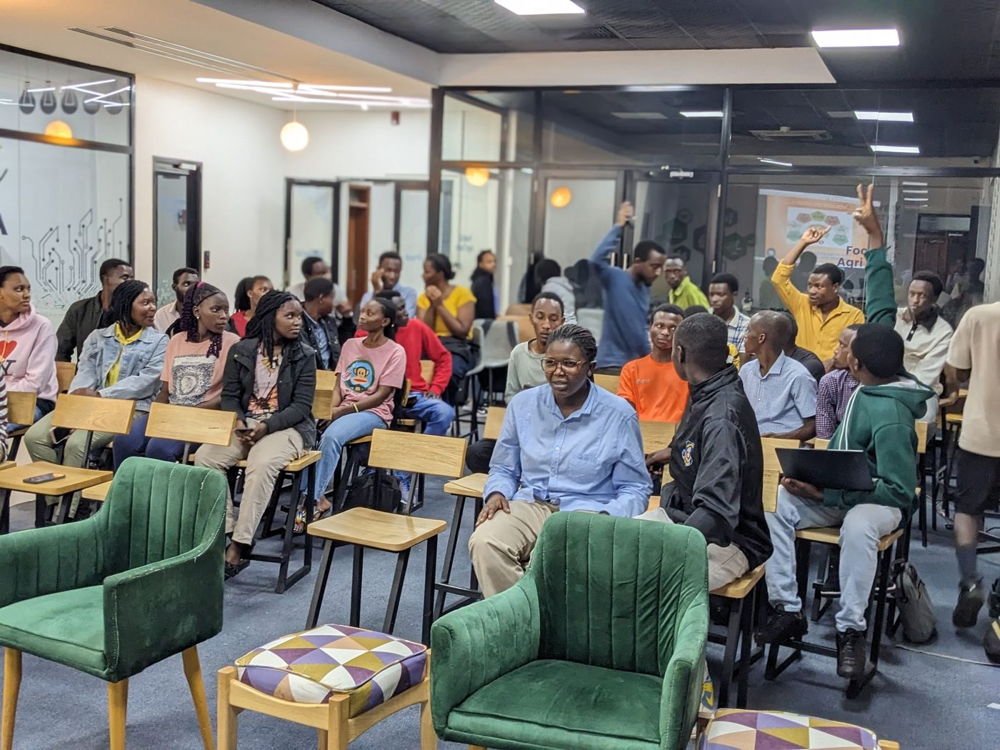
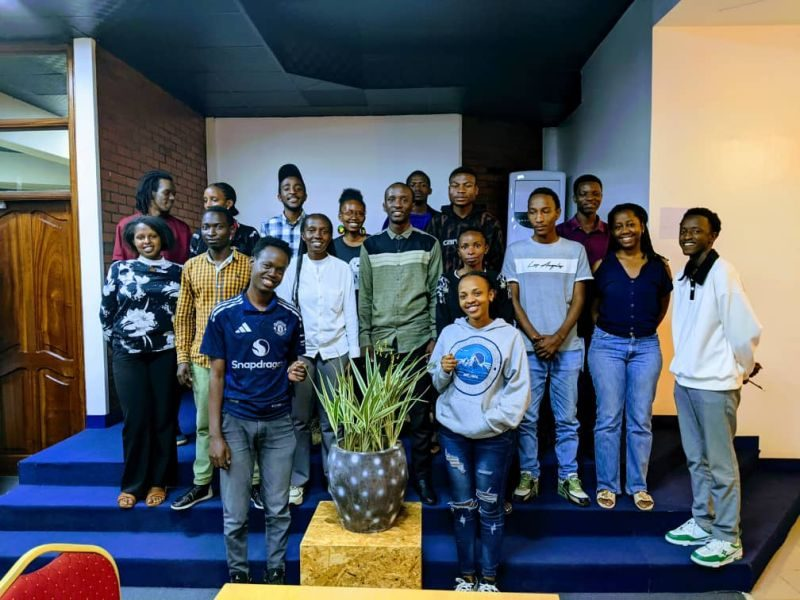
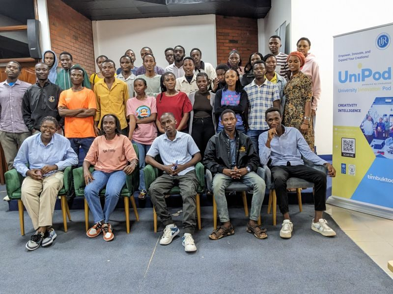

MSAR connects mathematics and statistics students across Rwanda — with its home at the University of Rwanda's College of Science and Technology — through weekly sessions, practical training, and a community that keeps showing up for each other.





MSAR brings together mathematics and statistics students from different years and gives them room to learn from one another, build practical skills, and take their first steps into the wider data community.
Five ways MSAR turns lecture-hall theory into skills members actually use.
Regular sessions where members learn, discuss, and practice together — every week, all year.
ExploreHands-on sessions with the tools the job market actually uses: Excel, Power BI, Python, R, and visualization.
ExploreQuizzes, hackathons, and problem-solving challenges that turn theory into teamwork.
ExploreStudents, alumni, and professionals share how math and statistics show up in real careers.
ExploreMembers across different years connect, share notes, and support each other through the semester.
ExploreA short look inside a real MSAR session — members working through problems together at the board and in small groups, part of the regular weekly programme that runs through the semester.
See More Session RecapsMembers gathered at Kigali View Hotel to celebrate the year’s progress and set goals for the year ahead.
Read more
MSAR’s weekly sessions are back, mixing core theory with hands-on practice in Excel, Power BI, Python, and R.
Read moreA new semester means new faces — here’s how to get involved with MSAR from week one.
Read moreWe're reaching out to members to hear how their time with MSAR has gone. If a session, a guest talk, or just the community itself has meant something to you, we'd love to feature your words right here.
Share Your StoryJoin a community of mathematics and statistics students building real skills together — one session at a time.